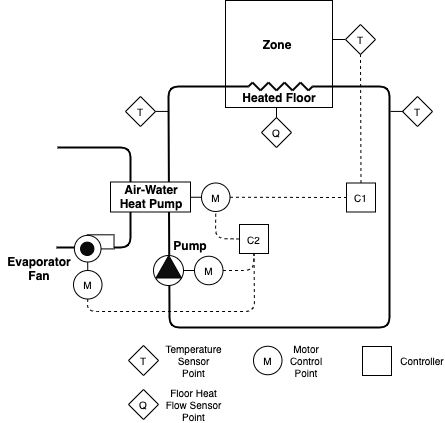

This is a single zone residential hydronic system model with an air-source heat pump and floor heating for WP 1.2 of IBPSA project 1.
This model represents a simplified residential dwelling for a family of 5 members. The building envelope model is based on the BESTEST case 900 test case. The envelope model is therefore similar to the one used in IDEAS.Examples.IBPSA.SingleZoneResidentialHydronic but it is scaled to an area that is 4 times larger. Particularly, the model consists of a single zone with a rectangular floor plan of 12 by 16 meters and a height of 2.7 m. The internal wall mass is modelled using a single wall with a a length that equals three times the building width plus two times the building length. This assumes that there are around 12 rooms in the building. The zone further consists of several south-oriented windows, which are modelled using a single window of 24 m2.
Exterior walls
The walls are modelled using IDEAS.Buildings.Components.OuterWall and consist of the following layers:
Name |
Thickness [m] |
Thermal Conductivity [W/m-K] |
Specific Heat Capacity [J/kg-K] |
Density [kg/m3] |
Layer 1 (wood siding) |
0.009 |
0.14 |
900 |
530 |
Layer 2 (insulation) |
0.0615 |
0.04 |
1400 |
10 |
Layer 3 (concrete block) |
0.1 |
0.51 |
1000 |
1400 |
Floor
The floor is modelled using IDEAS.Buildings.Components.SlabOnGround IDEAS.Buildings.Components.SlabOnGround and consists of the following layers:
Name |
Thickness [m] |
Thermal Conductivity [W/m-K] |
Specific Heat Capacity [J/kg-K] |
Density [kg/m3] |
Layer 1 (concrete) |
0.15 |
1.4 |
840 |
2100 |
Layer 2 (insulation) |
0.20 |
0.02 |
1470 |
30 |
Layer 3 (screed) |
0.05 |
0.6 |
840 |
1100 |
Layer 4 (tile) |
0.01 |
1.4 |
840 |
2100 |
Roof
The roof is modelled using IDEAS.Buildings.Components.OuterWall and consist of the following layers:
Name |
Thickness [m] |
Thermal Conductivity [W/m-K] |
Specific Heat Capacity [J/kg-K] |
Density [kg/m3] |
Layer 1 (roof deck) |
0.019 |
0.14 |
900 |
530 |
Layer 2 (fiber glass) |
0.1118 |
0.04 |
840 |
12 |
Layer 3 (plaster board) |
0.01 |
0.16 |
840 |
950 |
The zone is occupied by 5 people before 7 am and after 8 pm each weekday and full time during weekends.
There are no internal loads other than the occupants.
The model uses a climate file containing one year of weather data for Brussels, Belgium.
An air-to-water modulating heat pump of 15 kW nominal heating capacity extracts energy from the ambient air to heat up the floor heating emission system, as shown in Figure 1 below. A fan blows ambient air through the heat pump evaporator when the heat pump is operating. The floor heating system injects heat between Layer 2 (insulation) and Layer 3 (screed), with water as working fluid. The floor heating pump has a nominal mass flow rate of 0.5 kg/s when the heat pump is working.

Heat pump
A water-to-air heat pump with a scroll compressor is used. The heat pump is modelled as described by:
H. Jin. Parameter estimation based models of water source heat pumps. PhD Thesis. Oklahoma State University. Stillwater, Oklahoma, USA. 2012.
with air instead of water blowing through the evaporator. Air condensation is therefore neglected. The model parameters are obtained by calibration of the heat pump model to manufacturer performance data following the procedure explained in this heat pump calibration guide using manufacturer performance data from a Carrier air-to-water heat pump model 30AW015 which data can be found in this manufacturer datasheet.
For more information of the heat pump model we refer to the model documentation.
Fluid movers
The floor heating system circulation pump has the default total efficiency of the pump model, which is 49 % at the time of writing (motor and hydraulic efficiencies are separately 70 % each). Also the fan that blows ambient air through the heat exchanger uses this default total efficiency of 49 %. The nominal mass flow rate of the floor heating circulation pump is of 0.5 kg/s and the nominal pressure rise of the heat pump evaporator fan is of 0.1 kPa.
A baseline controller is implemented to procure comfort within the building zone. A PI controller is tuned with the zone operative temperature as the controlled variable and the heat pump modulation signal for compressor frequency as the control variable, as depicted as C1 in Figure 1 and shown in Figure 2 below. The control variable is limited between 0 and 1, and it is computed to drive the zone operative temperature towards the zone operative temperature setpoint. For baseline control, this setpoint is computed as the heating comfort setpoint plus an offset which varies depending on the occupancy schedule: during occupied periods the offset is set to only 0.2 degrees Celsius and is meant to avoid discomfort from slight oscilations around the setpoint; during unoccupied periods the offset is set to 5.5 degrees Celsius and is meant to compensate for the large temperature setback used during these periods. The latter offset prevents the need of abrubpt changes in the indoor temperature that may not be achievable because of the large thermal inertia of the floor heating system and which would consequently cause discomfort. All other equipment (fan for the heat pump evaporator circuit and floor heating emission system pump) are switched on when the heat pump is working (modulating signal higher than 0) and switched off otherwise. This is depicted as controller C2 in Figure 1.
The model inputs are:
oveFan_u [1] [min=0.0, max=1.0]: Integer signal to control the heat pump evaporator fan either on or off
oveHeaPumY_u [1] [min=0.0, max=1.0]: Heat pump modulating signal for compressor speed between 0 (not working) and 1 (working at maximum capacity)
ovePum_u [1] [min=0.0, max=1.0]: Integer signal to control the emission circuit pump either on or off
oveTSet_u [K] [min=278.15, max=308.15]: Zone operative temperature setpoint
The model outputs are:
reaCO2RooAir_y [ppm] [min=None, max=None]: CO2 concentration in the zone
reaCOP_y [1] [min=None, max=None]: Heat pump COP
reaPFan_y [W] [min=None, max=None]: Electrical power of the heat pump evaporator fan
reaPHeaPum_y [W] [min=None, max=None]: Heat pump electrical power
reaPPumEmi_y [W] [min=None, max=None]: Emission circuit pump electrical power
reaQFloHea_y [W] [min=None, max=None]: Floor heating thermal power released to the zone
reaQHeaPumCon_y [W] [min=None, max=None]: Heat pump thermal power exchanged in the condenser
reaQHeaPumEva_y [W] [min=None, max=None]: Heat pump thermal power exchanged in the evaporator
reaTRet_y [K] [min=None, max=None]: Return water temperature from radiant floor
reaTSetCoo_y [K] [min=None, max=None]: Zone operative temperature setpoint for cooling
reaTSetHea_y [K] [min=None, max=None]: Zone operative temperature setpoint for heating
reaTSup_y [K] [min=None, max=None]: Supply water temperature to radiant floor
reaTZon_y [K] [min=None, max=None]: Zone operative temperature
weaSta_reaWeaCeiHei_y [m] [min=None, max=None]: Cloud cover ceiling height measurement
weaSta_reaWeaCloTim_y [s] [min=None, max=None]: Day number with units of seconds
weaSta_reaWeaHDifHor_y [W/m2] [min=None, max=None]: Horizontal diffuse solar radiation measurement
weaSta_reaWeaHDirNor_y [W/m2] [min=None, max=None]: Direct normal radiation measurement
weaSta_reaWeaHGloHor_y [W/m2] [min=None, max=None]: Global horizontal solar irradiation measurement
weaSta_reaWeaHHorIR_y [W/m2] [min=None, max=None]: Horizontal infrared irradiation measurement
weaSta_reaWeaLat_y [rad] [min=None, max=None]: Latitude of the location
weaSta_reaWeaLon_y [rad] [min=None, max=None]: Longitude of the location
weaSta_reaWeaNOpa_y [1] [min=None, max=None]: Opaque sky cover measurement
weaSta_reaWeaNTot_y [1] [min=None, max=None]: Sky cover measurement
weaSta_reaWeaPAtm_y [Pa] [min=None, max=None]: Atmospheric pressure measurement
weaSta_reaWeaRelHum_y [1] [min=None, max=None]: Outside relative humidity measurement
weaSta_reaWeaSolAlt_y [rad] [min=None, max=None]: Solar altitude angle measurement
weaSta_reaWeaSolDec_y [rad] [min=None, max=None]: Solar declination angle measurement
weaSta_reaWeaSolHouAng_y [rad] [min=None, max=None]: Solar hour angle measurement
weaSta_reaWeaSolTim_y [s] [min=None, max=None]: Solar time
weaSta_reaWeaSolZen_y [rad] [min=None, max=None]: Solar zenith angle measurement
weaSta_reaWeaTBlaSky_y [K] [min=None, max=None]: Black-body sky temperature measurement
weaSta_reaWeaTDewPoi_y [K] [min=None, max=None]: Dew point temperature measurement
weaSta_reaWeaTDryBul_y [K] [min=None, max=None]: Outside drybulb temperature measurement
weaSta_reaWeaTWetBul_y [K] [min=None, max=None]: Wet bulb temperature measurement
weaSta_reaWeaWinDir_y [rad] [min=None, max=None]: Wind direction measurement
weaSta_reaWeaWinSpe_y [m/s] [min=None, max=None]: Wind speed measurement
No lighting model is included.
No shading model is included.
The model uses moist air despite that no condensation is modelled in any of the used components.
A simple, single circulation loop is used to model the floor heating system as well as the air circulation through the heat pump evaporator.
Fixed air infiltration corresponding to an n50 value of 10 is modelled.
The Peak Heat Day (specifier for /scenario API is 'peak_heat_day') period is:
The Typical Heat Day (specifier for /scenario API is 'typical_heat_day') period is:
All pricing scenarios include the same constant value for transmission fees and taxes of each commodity. The used value is the typical price that household users pay for the network, taxes and levies, as calculateed by Eurostat and obtained from: The energy prices and costs in Europe report. For the assumed location of the test case, this value is of 0.20 EUR/kWh for electricity.
The Constant Electricity Price (specifier for /scenario API is 'constant') profile is:
The Dynamic Electricity Price (specifier for /scenario API is 'dynamic') profile is:
The Highly Dynamic Electricity Price (specifier for /scenario API is 'highly_dynamic') profile is:
The Electricity Emissions Factor profile is: